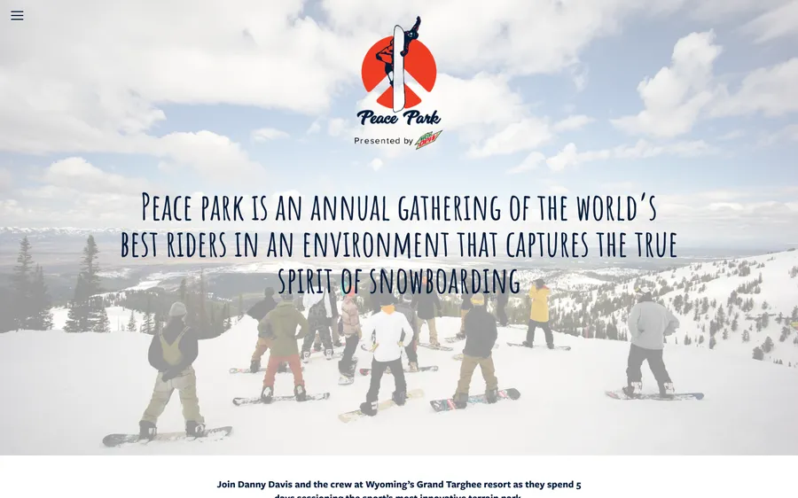

Services · option
Creative services
Original design and creative systems that work across every channel. Pick what you need, or let us connect it into one system.
An option from your reference: dark image cards in four groups. Cards use real project images where we have them and plain tiles elsewhere. Metrics and charts from the reference are left out.
Creative services
Original design and creative systems that work across every channel.

Ad creative
Static, animated and video ads for social, digital and multi-channel campaigns.

Branding
Brand development, identity systems, logos and guidelines that build lasting recognition.
Learn more →
Web design
Landing pages and websites with thoughtful UX, strong visuals and conversion in mind.
Learn more →Social media creative
Static and motion content, concepts and test variations for every platform.
Email design
Branded templates and campaigns designed to get opened and read.
eBooks & reports
eBooks, reports and digital publications designed to be read.
Illustration
Custom, on-brand illustration that extends your visual identity.

Packaging & merch
Packaging, merchandise and product presentation that strengthen the brand.
Presentation design
Pitch decks, sales presentations and storytelling systems.
Concept creation
Creative concepts and 360° campaign ideas that work across channels.

Print design
Collateral, brochures and print that keep the brand consistent off-screen.
Specialized production
Production for motion, video and immersive work.
Video production
Strategy-led video from concept through final delivery.
Motion design
On-brand motion for sites, campaigns, decks and ads.
3D & AR design
Immersive 3D and social AR experiences.
To come: confirm we offer thisAI services
Faster production without lowering quality or brand standards.

Marketing services
Strategy that connects the creative to business goals.
Marketing strategy
Digital marketing plans and insights that point the creative in the right direction.
Need one service or the full system? Let’s talk.
New brand, better site, campaign content, physical materials or a high-stakes deck. Strategy, design and execution in one place.